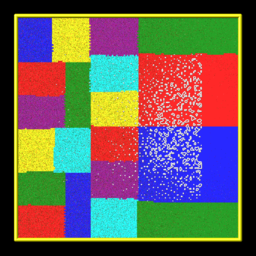
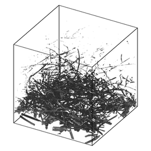
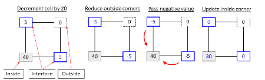
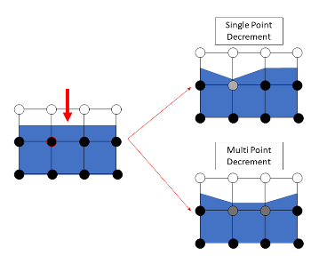

fix ablate command
Syntax:
fix ID ablate group-ID Nevery scale source maxrandom keyword value ...
ID is documented in fix command
ablate = style name of this fix command
group-ID = ID of group of grid cells that contain implicit surfaces
Nevery = perform ablation once every Nevery steps
scale = scale factor to convert source to grid corner point value decrement
source = computeID or fixID or uniform or random
computeID = c_ID or c_ID[n] for a compute that calculates per grid cell values fixID = f_ID or f_ID[n] for a fix that calculates per grid cell values v_name = per-grid vector calculated by a grid-style variable with name uniform = perform a uniform decrement random = perform a random decrement
maxrandom = maximum per grid cell decrement as an integer (only specified if source = random or uniform)
zero or more keyword/value pairs may be appended
keyword = mindist or multiple or conserve
mindist value = fraction fraction = minimum fractional distance along cell edge for triangle/line vertices (value > 0 and < 0.5) multiple value = yes or no conserve value = yes or no
Examples:
fix 1 ablate surfcells 1000 10.0 c_tally
fix 1 ablate surfcells 0 0.0 random 10
fix fablate ablate inner 0 0.2 random 0 mindist 0.02
Description:
Perform ablation once every Nevery steps on a set of grid cell corner points to induce new implicit surface elements in those grid cells. This command is also used as an argument to the read_isurf command so that the grid corner point values it reads from a file can be assigned to and stored by each grid cell.
Here are simulation snapshots of 2d and 3d implicit surface models through which particles flow. Click on any image for a larger image. The 1st and 3rd images are the initial states of the porous media. The 2nd and 4th images are snapshots midway through an ablation simulation. In the 2d case, the colorings are by processor for sub-domains each owns. Particles flow from left to right. The implicit triangles for the 3d case were created via Marching Cubes (discussed on the read_isurf command doc page) from a tomographic image of a sample of NASA FiberForm (TM) material, used as a heat shield material on spacecraft. Particles flow from top to bottom.






The specified group-ID must be the name of a grid cell group, as defined by the group grid command, which contains a set of grid cells, all of which are the same size, and which comprise a contiguous 3d array. It must be the same as group-ID used with the read_isurf command, which specifies its Nx by Ny by Nz extent. See the read_isurf command for more details. This command reads the initial values for grid cell corner points, which are stored by this fix.
The specfied Nevery determines how often an ablation operation is performed. If Nevery = 0, ablation is never performed. The grid cell corner point values and the surface elements they induce will remain static for the duration of subsequent simulations.
The specified scale is a pre-factor on the specified source of ablation strength. It converts the per grid cell numeric quantities produced by the source (which may have associated units) to a unitless decrement value for the grid cell corner points, which range from 0 to 255 inclusive. A value of 255 represents solid material and a value of 0 is void (flow volume for particles). Values in between represent partially ablated material.
The source can be specified as a per grid cell quantity calculated by a compute, fix, or variable. For example, compute isurf/grid can tally the number of collisions of particles with the surfaces in each grid cell or the amount of energy transferred to the surface by the collisions. Or compute react/isurf/grid can tally the number of reactions that remove a species from the surface.
An example of a fix which be used as a source is fix ave/grid which could use either of those per grid cell computes as input. It could thus accumulate and time average the same quantities over many timesteps. In that case the scale factor should account for applying a time-averaged quantity at an interval of N steps.
Finally, a grid-style variable can be be used as a source. This could perform a calculation on other per grid cell quantities. For example, it could add and subtract columns from the compute or fix just mentioned to tally adsorption versus desorption reactions and thus infer net mass removed from the surface.
For debugging purposes, the source can also be specified as random with an additional integer maxrandom value also specified. In this case, the scale factor should be floating point value between 0.0 and 1.0. Each time ablation is performed, two random numbers are generated for each grid cell. The first is a random value between 0.0 and 1.0. The second is a random integer between 1 and maxrandom. If the first random # < scale, then the second random integer is the decrement value for the cell. Thus scale is effectively the fraction of grid cells whose corner point values are decremented.
For basic testing of new ablation capabilities or geometries, the source can be specified as uniform. Any cell which contains part of the gas and the surface is decremented by maxrandom.
See the explanation for the optional mindist and multiple keywords below.
Here is an example of commands that will couple ablation to surface reaction statistics to modulate ablation of a set of implicit surfaces. These lines are taken from the examples/ablation/in.ablation.3d.reactions input script:
surf_collide 1 diffuse 300.0 1.0 surf_react 2 prob air.surf compute 10 react/isurf/grid all 2 fix 10 ave/grid all 1 100 100 c_10[*] dump 10 grid all 100 tmp.grid id c_10[1] global surfs implicit fix ablate ablate all 100 2.0 c_10[1] # could be f_10 read_isurf all 20 20 20 binary.21x21x21 99.5 ablate surf_modify all collide 1 react 2
The order of these commands matter, so here is the explanation.
The surf_modify command must come after the read_isurf command, because surfaces must exist before assigning collision and reaction models to them. The fix ablate command must come before the read_isurf command, since it uses the ID of the fix ablate command as an argument to create implicit surfaces. The fix ablate command takes a compute or fix as an argument, in this case the ID of the compute react/isurf/grid command. This is to specify what calculation drives the ablation. In this case, it is the compute react/isurf/grid command (or could be the fix ave/grid command) which tallies counts of surface reactions for implicit triangles in each grid cell. The compute react/isurf/grid react/isurf/grid command requires the ID of a surface reaction model, so that it knows the list of possible reactions to tally. In this case the reaction is set by the surf_react command, which must therefore comes near the beginning of this list of commands.
As explained on the read_isurf doc page, the marching cubes (3d) or marching squares (2d) algorithm is used to convert a set of grid corner point values to a set of implicit triangles in each grid cell which represent the current surface of porous material which is undergoing dynamic ablation. This uses a threshold value, defined by the read_isurf command, to set the boundary between solid material and void.
The ablation operation decrements the corner point values of each grid cell containing porous material. The marching cubes or squares algorithm is re-invoked on the new corner point values to create a new set of implicit surfaces, which effectively recess due to the decrement produced by the ablative source factor.
The manner in which the per-grid source decrement value is applied to the grid corner points is as follows. Note that each grid cell has 4 (2d) or 8 (3d) corner point values. Except at the boundary of the 2d of 3d array of grid cells containing porous materials, each corner point is similarly shared by 4 (2d) or 8 (3d) grid cells.
Within each grid cell, the decrement value is subtracted from the smallest corner point value. Except that a corner point value cannot become smaller than 0.0. If this would occur, only a portion of the decrement is used to set the corner point to 0.0; the remainder is applid to the next smallest corner point value. And so forth on successive corner points until all of the decrement is used. If the corner point values of the cell sum to less than its decrement value, they are all set to 0.0 and the rest of the decrement is dropped, since the cell has no material left to remove. The dropped amount is reported; see the discussion of the global vector below.
The amount of decrement applied to each corner point is next shared between all the grid cells (4 or 8) sharing each corner point value. The sum of those decrements is subtracted from the corner point, except that it's final value is set no smaller than 0.0. All the copies of each corner point value are now identical.
Several grid cells can decrement the same corner point in one ablation operation by more than its value, in which case each of them removes the fraction of that value its own decrement asked for, and the part of their decrements which the corner point could not cover is offered to the other corner points of their own cells, repeating the two steps above. A grid cell whose decrement is fully applied in the first pass, which is the usual case, is not affected.
One issue with the marching cubes or squares algorithm is that it can produce very tiny triangles (3d) or line segments (2d) when grid corner point values are equal to or very close to the threshold value.
To avoid this problem, the default behavior of this fix is to use an "epsilon method" to adjust a grid corner point value. If the corner point has a value X where threshold-epsilon < X < threshold+epsilon, then it is reset to a value = threshold-epsilon. As explained above, the threshold value is defined by the read_isurf command. Epsilon is set within the code to be 1.0e-4. Note that this is on the scale of corner point values which can range from 0 to 255.
An alternate method for avoiding tiny triangles or line segments is to use the mindist keyword. For 3d models, its fraction value sets the minimum fractional distance between any vertex of a triangle generated by the marching cubes algorithm and any of the 8 corner points of the grid cell. For 2d models, it sets the minimum fractional distance between any end point of a line segment generated by the marching squares algorithm and any of the 4 corner points of the grid cell. Fractional means relative to the grid cell edge length. I.e. if the grid cell size is 2.0 and fraction is 0.1, then the fractional distance is 0.2.
The specified fraction value must be a number >= 0.0 and < 0.5. If the value is less than 1.0e-4, then it is treated as if the value were 0.0 (the default), and the epsilon method described above is used.
For values of fraction >= 1.0e-4, the "isosurface stuffing" method proposed by Labelle and Shewchuk (Labelle07) is used. The idea is as follows:
If a generated triangle vertex or line segment end point could be geometrically closer to a grid corner point than fraction, the vertex location is adjusted to ensure the vertex/end-point will always be at least a distance fraction from the corner point and remains between the same inside and outside grid corner points. The grid point values themselves are not changed. There are two cases to consider.
(1) The vertex is too close to a inside grid corner point. In this case, the vertex location is shifted towards the outside corner point such that the relative distance from the vertex to the inside corner point is at least mindist
(2) Conversely, if the vertex is too close to the outside grid corner point, the vetex location is shifted towards the inside corner point such that the relative distance from the vertex to the outside corner point is at least mindist

The multiple option allows a multipoint decrement (Hong24) to be used. In a cell, three types of corners are identified: inside, outside or interface. An inside point is a point inside the surface (its values is greater than the specified threshold). An outside point is a point that is outside the surface and all corner points adjacent to that corner point within the cell are also outside the surface. An interface is a point outside the surface but one of its neighboring points is inside. Given a cell decrement, the multipoint decrement distributes that cell decrement evenly to each interface point. In the case the interface point becomes negative, the negative value is evenly distributed to each of the adjoining inside points. The multipoint decrement may also be used with the multivalues.

The multipoint decrement is conceptually different than the single point decrement. A single point decrement visits each corner point one at a time and reduces the minimum corner point value found. The multipoint decrement reduces all interface points. A distributed decrement is advantageous when one is interested in preserving cell level features. In the above example, a single cell is ablated (indicated by a red arrow). With a single point decrement, only one corner point is updated and only the left side of the affected cell ablates. With the multipoint decrement, two corner points are reduced and the entire surface contained within the ablated cell recedes.
Restart, output info:
No information about this fix is written to binary restart files.
This fix computes a global scalar and a global vector of length 3. The global scalar is the current sum of unique corner point values across the entire grid (not counting duplicate values). This sum assumes that corner point values are 0.0 on the boundary of the 2d or 3d array of grid cells containing implicit surface elements.
The 3 vector values are the (1) sum of decrement values for each grid cell in the most recent ablation operation, (2) the # of particles deleted during the most recent ablation operation that ended up "inside" the newly ablated surface, and (3) the cumulative amount of requested decrement which the corner point values could not pay. The second quantity should be 0. A non-zero value indicates a corner case in the marching cubes or marching squares algorithm the developers still need to address.
The third quantity is normally 0.0 as well. It becomes non-zero when a grid cell is asked to remove more material in one ablation operation than the sum of its corner point values, as described above. That is expected for the random and uniform sources, which keep asking after a cell is empty, but for a c_ID or f_ID source it means the ablative source removed less material than it accounted for, e.g. surface chemistry created gas products for solid material that was never removed. A warning is printed the first time it happens. Note that this quantity is tallied for the single point decrement only. With the multiple keyword the deficit is instead passed to the inside corner points, which are clamped at 0.0, and only a warning is printed.
The conserve keyword applies to the single point decrement only. With conserve set to yes, the default, a grid cell whose claim on a shared corner point was reduced because a neighbor cell claimed the same point in this ablation operation is offered the remainder of its claim again, from the other corner points of the same cell. This is what makes the third vector value above account for the requested decrement exactly. An ablation operation which pays every claim in full stops after the first decrement, so a run that never over-claims a corner point costs nothing extra; one that cannot pay in full runs a second decrement to find that nothing more can be removed, which is a second round of corner point communication. Setting conserve to no stops after the first decrement, so a claim a shared corner point could not cover is dropped and reported rather than retried.
For the single point decrement the sum of this quantity and the removed corner point values accounts for the requested decrement exactly, so it is the only decrement which is not applied. It means the source asked to remove material from a grid cell which has none left, so the two are inconsistent: with a c_ID or f_ID source the surface chemistry created gas products for solid material that was not there to remove, which no accounting inside this fix can repair.
These values can be accessed by any command that uses global values from a fix as input. See Section 6.4 for an overview of SPARTA output options.
The scalar and vector values are unitless.
Restrictions:
This fix can only be used in simulations that define implicit surfaces.
All surface elements must be assigned to the same surface collision model and (optionally) the same surface reaction model via the surf_modify command. This is because each ablation operation discards and re-creates all the implicit surface elements, and this fix re-assigns the same pair of models to all the new elements. Assigning different models to different groups of surface elements is not yet supported with ablation; an error is generated if that is the case.
Related commands:
Default:
The default for the mindist keyword = 0.0, i.e. the epsilon method is used. The default for the multiple keyword = no. The default for the conserve keyword = yes.
(Labelle07) F. Labelle, and J. R.. Shewchuk, "Isosurface stuffing: Fast Tetrahedral Meshes with Good Dihedral Angles," SIGGRAPH (2007).
(Hong24) A. Y. K. Hong, M. A. Gallis, S. G Moore, and S. J. Plimpton, "Towards physically realistic ablation modeling in direct simulation Monte Carlo," Physics of Fluids (2024).